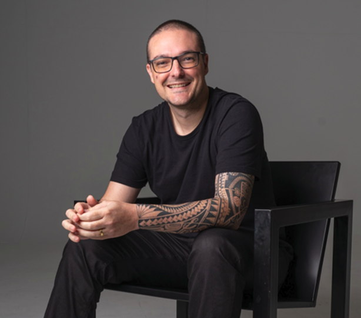
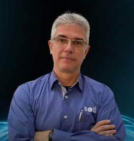

üé§ Palestrantes

Maurício Canto
Diretor de Produtos na iTFLEX
Leonísio S. Júnior
Consultor de Segurança da Informação na Ciser

Clenilton C. Pereira
CEO TJP Soluções em Embalagens

Fábio Meincheim
Coordenador de TI do IFSC

Marcelo Silvestrini
Gestor Comercial na SETI Tecnologia
Allyson Souza
Profissional Instrutor da Polícia Federal
Vinicius de Oliveira
Sócio Fundador da Tax Strategy e CEO da TS

Erika Santomero
Professora na Secretaria Estadual de Educação